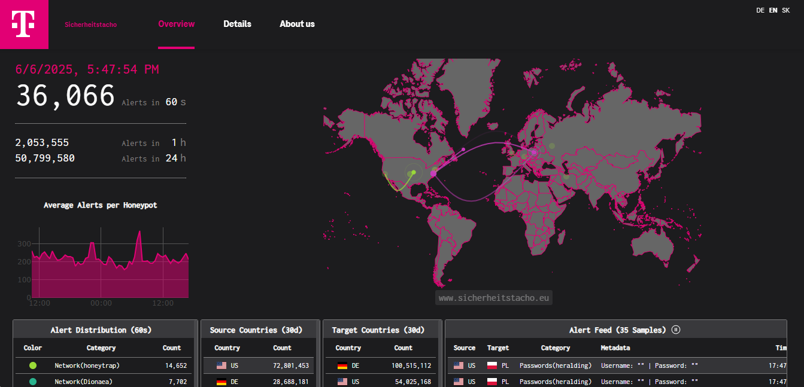
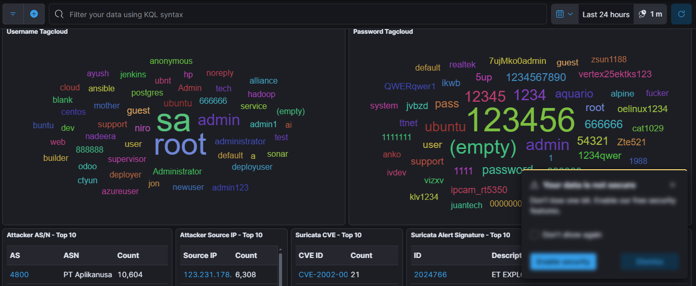
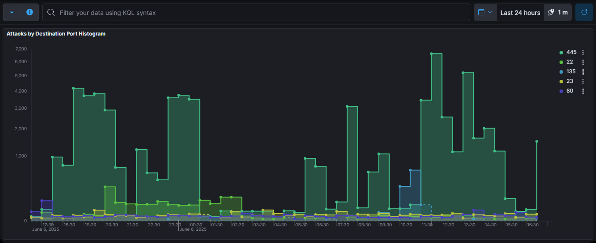

Network Architecture Diagram
This diagram illustrates layered network security architecture we used for our project. It demonstrates a typical secure network setup, emphasizing defense-in-depth by isolating public-facing services (DMZ) from sensitive internal assets, and using security layers (firewall/router) to control access and monitor for threats.
Penetration testers (using Parrot OS and Kali Linux) attempt to access or attack services in the DMZ. The firewall/router layer restricts and monitors any attempts to reach the internal network, which houses critical infrastructure.
Key Components and Flow:
- 🎯Attack Simulation Layer: Parrot OS and Kali Linux are used for penetration testing and ethical hacking.
- 🌐DMZ (Demilitarized Zone): First network segment exposed to external traffic; acts as a buffer zone.
- 🛡️Firewall / Router Layer: Controls and filters traffic; enforces security policies between DMZ and internal network.
- 🏢Internal Network: Most protected segment containing sensitive assets like a database server, workstations, and a domain controller.
Global Cyberattack Activity
This image is a real-time cybersecurity dashboard from Deutsche Telekom that shows the scale and sources of cyberattacks worldwide. The dashboard displays a world map with attack flows, live alert counts over 36,000 in just 60 seconds and highlights which countries are most often attacking and being targeted. With graphs and tables summarizing alert types and country data, the picture helps users quickly understand the global volume and distribution of cyberattacks at any moment


SSH Attack Usernames and Passwords
This Kibana dashboard visualizes data collected from a honeypot deployed for a research project, specifically tracking SSH login attempts. The image shows two prominent word clouds: one for usernames and one for passwords most frequently used by attackers. Common usernames like "root," "sa," and "admin" dominate the username cloud, but it also includes unique entries such as "nadeera" and "niro," reflecting the researchers' own failed login attempts during testing. The password cloud highlights weak and default passwords like "123456," "12345," "admin," and "(empty)," which attackers often try in brute-force attacks. Additional tables at the bottom summarize the top attacker networks, source IPs, and most frequent attack signatures. Overall, the dashboard provides a clear overview of attacker behavior and the prevalence of common credentials used in SSH attack attempts.
Attack Trends on Common Ports Over Time
This Kibana dashboard visualizes the number of attacks targeting common network ports on the honeypot system over the past 24 hours. The histogram tracks attack counts for ports such as 445 (used for Microsoft SMB), 22 (SSH), 135 (Microsoft RPC), 23 (Telnet), and 80 (HTTP). The data shows that port 445 consistently receives the highest volume of attacks, with frequent spikes reaching over 6,000 attempts in a short period. Port 22, associated with SSH, also experiences regular attack activity, while other ports like 135, 23, and 80 see lower but steady attack rates. This visualization helps illustrate how attackers frequently target well-known service ports, with clear patterns and surges in malicious traffic over time.
